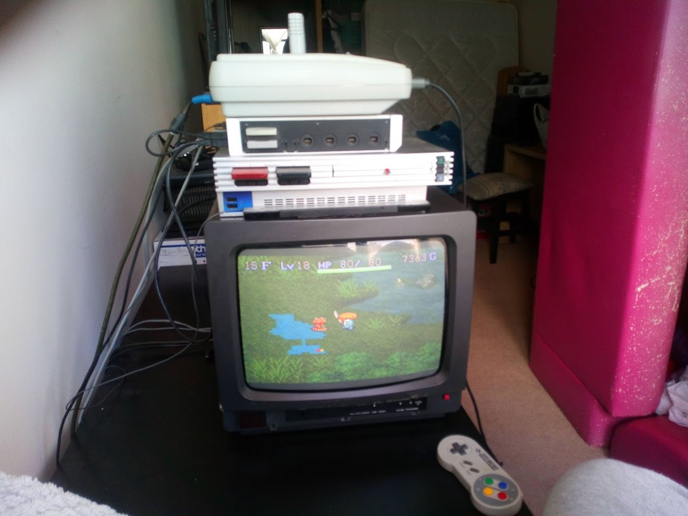
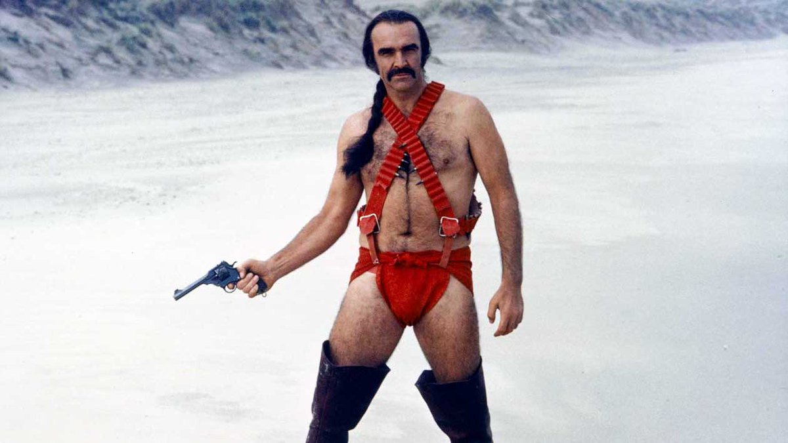
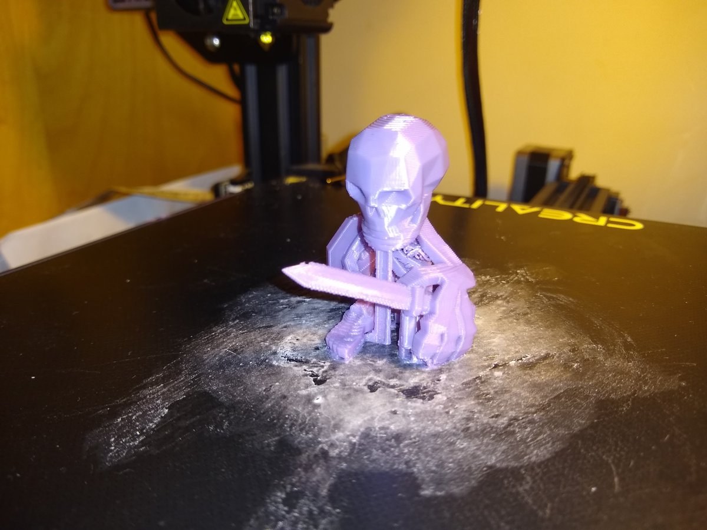
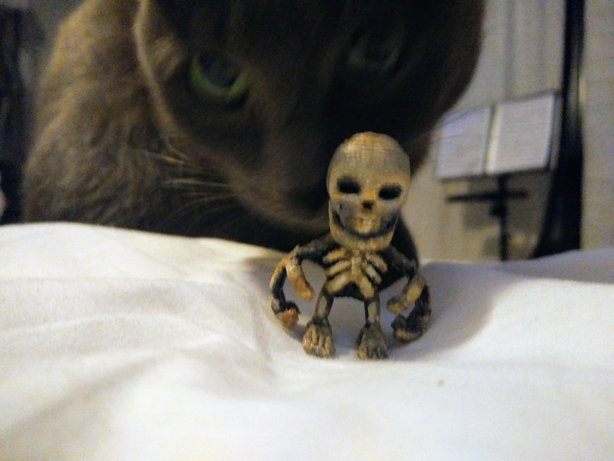
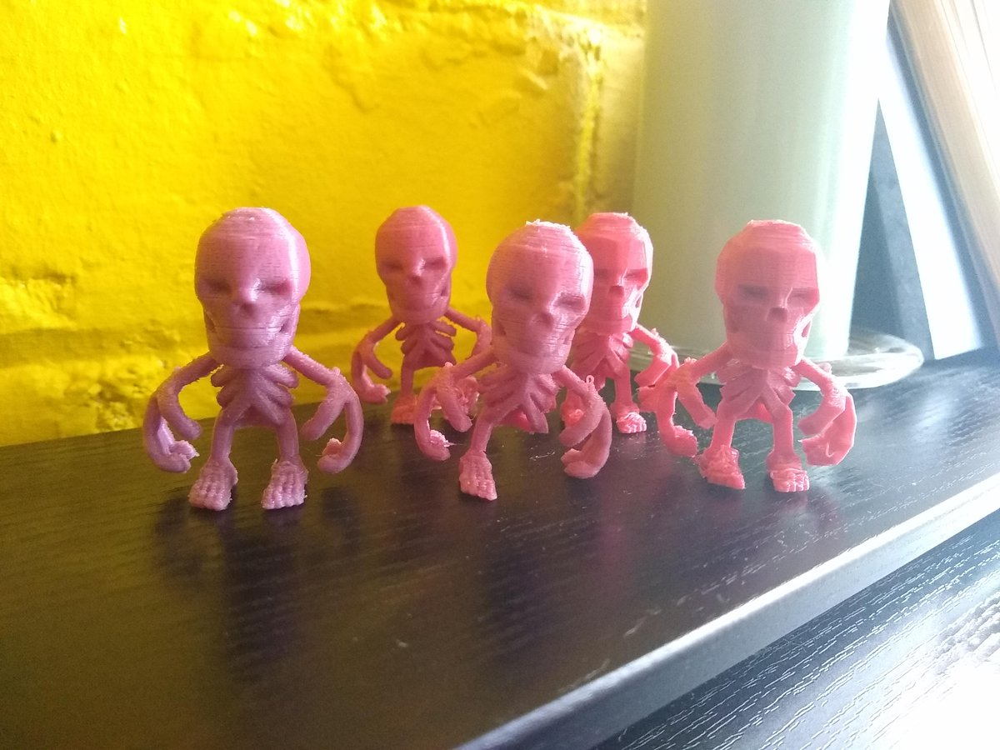
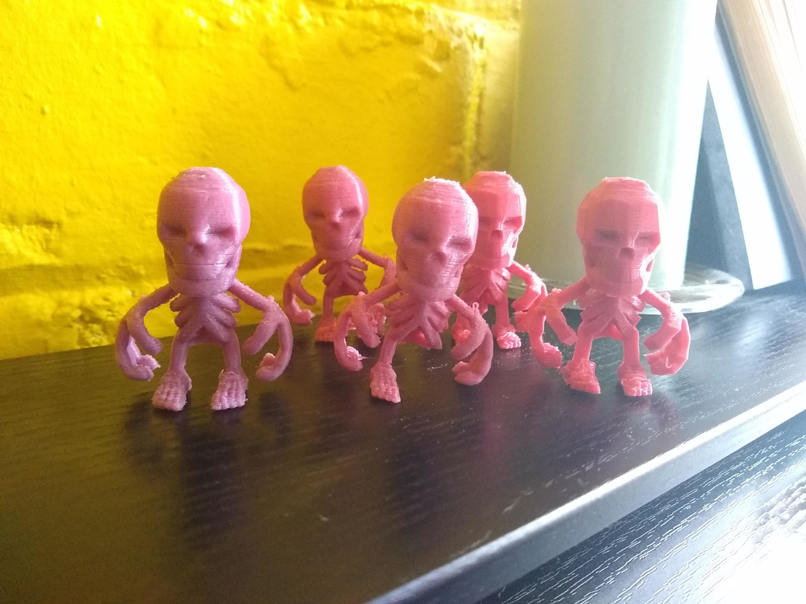

...
https://twitter.com/crowbarska/status/1323365215195594752 @crowbarska yup, one of the NPCs in town sets them, so it is "part of the game". The puzzles show some of the more esoteric rules and possibilities that you might miss without a bit of prompting. Even handing out a reward so it is worth completing them even if you know what you are doing.
https://twitter.com/crowbarska/status/1323027015444910085 @crowbarska there are still a few of the mystery dungeon games that have not made it to english but the first Shiren is my favorite, maybe the NDS version which is a little bit easier but mostly the same.
I usually point at the Shiren puzzle dungeons as the perfect way to do a tutorial.
https://twitter.com/crowbarska/status/1323021689853255681 @crowbarska by moonspeak I mean it's the original Japanese SNES cartridge so has the added difficulty of being in a language I do not understand...
I'm afraid thats just an old silver PS2 on a rather bright day. :)
https://twitter.com/crowbarska/status/1323013455645999107 @crowbarska Shiren is the bestist, I still have not quite finished the original in moonspeak but I'm getting there...

Who wore it better?

@johnmclear That's strange, by my calculations microsoft*node_modules should be nearer 1 Gb. :)
@ekoner You like the big creepy crawlies?
Have you tried Grounded?
https://www.epicgames.com/store/en-US/product/empires-of-the-undergrowth/home
This is rather nice and the perfect use for that 10quid epic token which is due to evaporate in a couple of days.
Mayhaps you would recognize it from its street name : Brown-Ray. https://twitter.com/OOCMesozoicLife/status/1321582452373159947
@magic_bane @ShroudofAvatar I talked shi into giving Ultima Online a go last month when I realized it had gone free to play.
Mostly to see what had changed in 20 years, if anything, and, well, I think shi is no longer letting me choose games to play together. :)
A boneman without a sword is like a harry without a hausen.

Shi has been seeing what happens when you apply a spot of paint to Mr Boneman.
As you can see it has drawn the attention of his mortal enemy.

- Delete Flash
- Force HTTPS
- ...
- Security LOL
@magic_bane I shall bring you one when next we bddonk* :)
*although that may not be until 2030.
Mr Boneman now exists in your dimension just in time for helloweewee. http://xixs.com/blog/2020-10-22-3dprint-mr-boneman

3DPrint Mr Boneman

Mr Bone man is upside down because it eases his passage through the birth canal and into your dimensions.
This is a test print from my Avatar generator, the mesh had to be messed around with a bit, adding something to hold the hands and feet to the torso then bones needed thickening up in places and angles reduced in order to get it to print without needing support. Which is also why the STL is upside down, that way it grows upwards like a branching tree and mostly works perfectly until it gets to the feet which is just OK. It was printed with 2mm of support so the very top of the head sticks to the build plate without being cut flat. The top of the head is still slightly wonky and you need to pull the support hat off without breaking the neck but at least it prints.
In the blender file you see some modifier tricks to get a mesh out that doesn't crash slic3r using remesh and decimate. Makes the STL file huge and blender slow but the output is easier to slice. You can also choose between lowpoly or smooth by removing the initial subdivide modifier, I kinda like the low poly look in 3d prints but other people seem to prefer it smooth :)
This is the Slic3r config files I used with an ender 3 pro. I've not really had much luck with support materials beyond using it to stick the first few layers to the bed so that is how it is setup. Should take an hour and half to print and if it goes wrong it will be right at the end when it gets to the feet.

In other news after ripping a hole in my magnetic bed cover I've finally worked out how to use the glass bed. The secret is Pritt Stick, slap a bit of that on each time and prints will actually stick to the bed rather than start sliding around halfway through a print. Tried other suggested tricks but that is the only one that worked for me. Not sure needing glue with each print is an upgrade from the magnetic bed cover which I found much easier to use but at least it works now.
Looking forward to contacting James Randi at my next Ouija party.